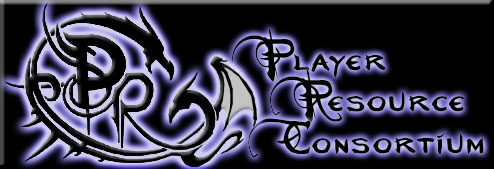
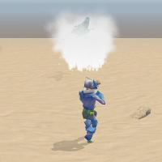

Q) PRC? What's that all about then?
A) The PRC stands for the "Player Resource Consortium"; content designed for players to use without requiring a module builder to design for it specifically. The bulk of the content is additional classes (Base and Prestige, about 100 distinct classes at the moment including Bioware's original 22), but there is also additional races & sub-races (again making around 100 in total), feats, skills, spells, domains, a revised Epic Spellcasting system, and lots of other content.
The current core PRC development team is composed of:
We have had many previous developers and contributors, but I won't try list them for feat of omitting someone. Suffice to say, they know who they are and we are very grateful to them for their contributions and efforts; "Standing on the shoulders of giants" etc.
Historically, the PRC started shortly after HotU was released and was based on Mr Bumpkins set of scripts for fixing the "Palemaster levels only count for slots, not for caster level" Bioware bug. Stratovarious made a few basic Prestige classes for casters, and then more classes were contributed and maintained by other people, until gradually it snowballed into the massive amount of content it is now. At the time of writing, we have recently started alpha testing (alpha means an incomplete early version, before beta testing starts) version 2.3 which includes full 3.5 ed psionics amongst other things.
Q) This sounds very familiar, isn't this the same as CEP?
A) Not at all, the two have very different aims. CEP is an amalgamation of pre-existing community content designed primarily to make builders lives easier and to save players downloading lots of module-specific hak files. The PRC on the other hand is a much smaller download because it contains no additional models (except for the PRC Companion, but more on that later). The PRC also comes with a very useful Module Updater tool which can install the PRC content easily into most pre-existing modules, including the Official Campaigns. So instead of only using the PRC content in modules explicitly designed for it, the PRC can be used in almost any module.
In addition, CEP is mostly graphical content (models, icons, portraits, etc) but the PRC is mostly gameplay content; it won't change the look of NWN, but it does change how you play NWN and in a good way too.
Q) Wow, sounds like a lot of work. Can you take me through some of the highlights?
A) One of the most popular, and oldest, classes is the PnP Shifter. This is an alternative version of the Shifter class Bioware made that is much closer to the original Pen and Paper (PnP) version in D&D, however instead of having a small selection of forms to choose from, the PnP Shifter can mimic any creature they encounter and then remember that form to shift back into later. There are quite few restrictions based on how many shifter levels you have, race, size, etc, but with enough dedication it can be very powerful. Also, the PnP Shifter has had its entry requirements changed to be closer to PnP, this means that many other classes can take it as its two key requirements are the ability to cast level 3 spells (so all spellcasting classes count, including rangers / paladins) and the ability to have an "Alternate Form" such as a polymorph spell, druid Wild Shape, or a racial ability to magically alter themselves. So a Cleric with the Animal domain, Wizard/Sorcerers, or even a Pixie Paladin would all be able to take PnP Shifter if they wanted to.
Another popular component of the PRC is the Epic Spell System. This was independently developed by Boneshank, and the PRC integrated it with his permission. The original entry on the vault is here. The Epic Spell System replaces Bioware's epic spells with a system that is far closer to PnP. Instead of having to spend feats to gain epic spells, spellcasters have to research epic spells instead. This involved several steps. Firstly, a spellcaster must gain a range of Spell Seeds which are the building blocks of epic spells. Then to research the spell itself the caster must use a book containing the spell in an epic spell research laboratory. This involves a spellcraft check and paying a large sum of gold and XP. Once they have done that, spellcasters have a number of epic spell slots equal to their Lore skill divided by ten that they can use for any of their epic spells, similar to how a bard or sorcerer casts their spells. The spellcaster also has to make a spellcraft check to cast the spell successfully, and some have additional costs to cast such as backlash damage or XP. There is also a far greater range of epic spells to learn ranging from ones suitable for character who have just become epic (Such as Animus Blast, which deals cold damage to opponents and raises any killed as skeletons under the casters command) to spells of world-changing effects (Dire Winter for example, which deals 2d6 cold damage to anyone in the area for 20 hours). There are also epic buffing spells (Herculean Alliance raises the strength, dexterity, and constitution of all allies within 20' by 1d4+5 for 20 hours) or spells to use against epic opponents (Audience of Stone, an area petrification spell, or Nailed To The Sky which pins an opponent in mid-air).
In the latest version, we have implemented full 3.5ed psionics (You can look at System Reference Documents (SRD) for information on the PnP rules for this, http://www.d20srd.org for example). This means:
Q) Psionics? Hasn't this been done before in Mr Nathan's Psionics! hak?
A) To a degree, Mr Nathan's hak is a good basic psionic system, however, the PRC version is far larger. We have added far more content than Mr Nathan has, such as anti-psionic feats and meta-psionics as well as more powers. Also, we have 4 base classes and multiple prestige classes in contrast to Mr Nathan's single class. This is not to say that Mr Nathan's work is not good, he did it first and he did it well, its just that ours is better!
Q) So how does a player use psionics? Is there anything builders need to do?
A) Using psionics is as easy as using the PRC in general. In most cases, it is a simple double click to run the downloaded installer. Then you simply have to run the module updater and select the modules you want to use the PRC with (including the official campaigns, but not the premium modules). There is a full installation guide on our website, complete with step by step screen shots and easy-to-follow instructions. http://nwnprc.netgamers.co.uk -> Manual -> Installation
Once you have the PRC installed, you can start multi-classing into psionic classes and taking psionic feats in-game as you would any other content. If you want to take a psionic class at level 1, you have to use the java character creator since Bioware hardcoded what classes and races can be taken at level 1. Again, installation and usage instructions are in clear step by step format with screen shots at our website.
When you have access to psionic power, you will get a conversation appear to select them. As with bards and sorcerers, you can only select powers when you gain a level, however unlike bards and sorcerers you can't change your powers once you have selected them. After you pick a name from the list, a description of that power appears and you can confirm your selection or go back and select a different one.
Once you have selected your power(s), they will appear on the class radial under your psionic class. Then you can select them and use them as you would any other feat or spell. You can quick bar them as normal too. When you do use them, your character will do the manifesting animations and then manifest the power. If you don't have enough power points, because you haven't rested recently for example, then the power will not complete.
To augment a power, simply select the level of augmentation from the class radial just before manifesting the power but note that if you raise the total power point cost higher than your manifester level, you cannot manifest the power. For meta-psionics its a similar effect, simply select it just before casting. Augmentation and meta-psionics use the instant-feat ability that Bioware added in 1.66, so your character doesn't have to spend a round applying it. Also, meta-psionics and several psionic feats require you to use your "psionic focus". This is a measure of internal concentration that a character must spend a round to acquire, but one you are focused, you stay focused until you use it. Psionic focus along with the power point usage cap are designed to stop psionic characters being over-powered and able to use all of their special abilities in repeated quick succession.
After they are cast Psionics behaves very similar to conventional spells, indeed many powers mimic the effects of spells such as Knock, Light, Dispel Magic, Cure Wounds, and others. Dispel magic can dispel psionics, and visa versa.
Q) Well, that sounds great. What else is in 2.3?
A) Now that would be giving too much away in one go wouldn't it? We will have more to tell you another day.